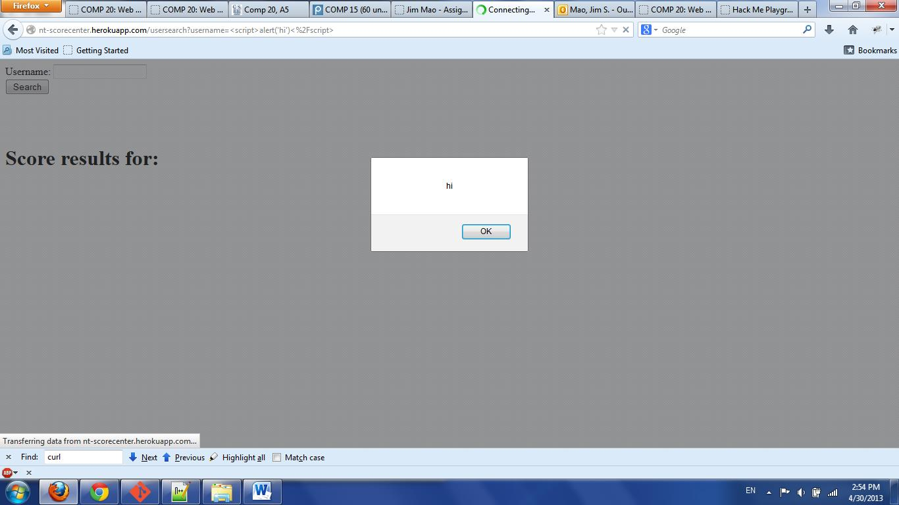
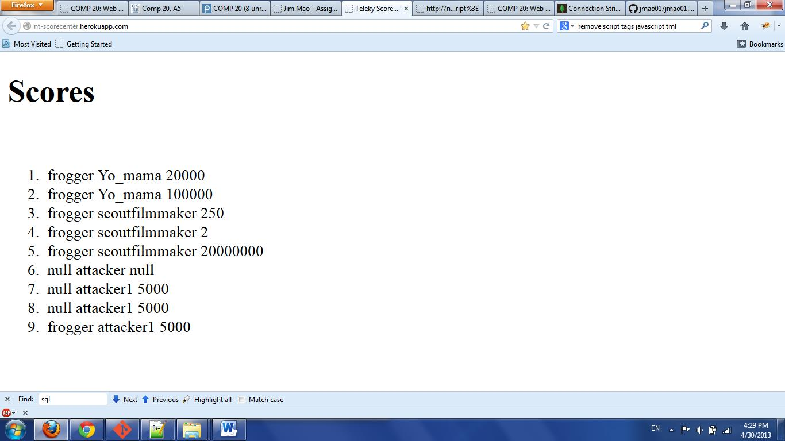
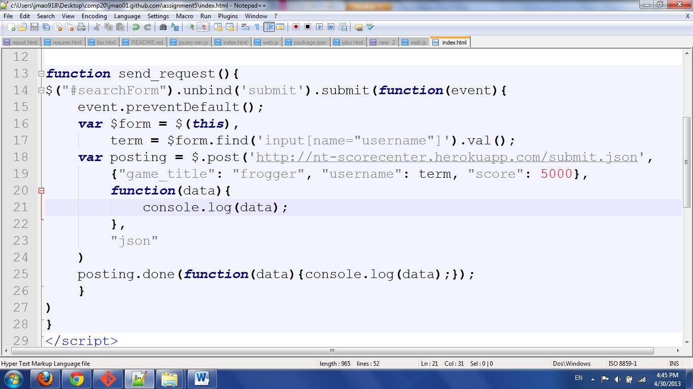
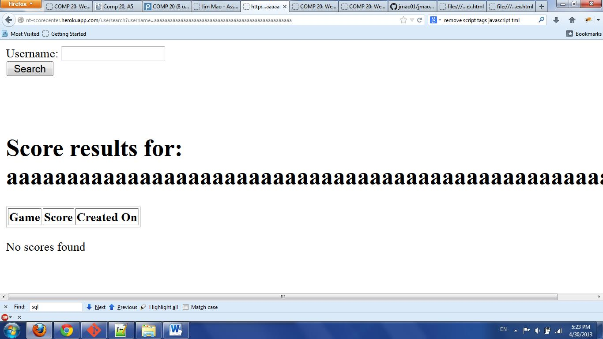

For Assignment 5, students were asked to create a web application that would represent a scorecenter for games such as the Frogger game in Assignment 4. This scorecenter needed to have the following features: a POST API called /submit.json, a GET API called /highscores.json a root called /, and a usersearch page called /usersearch. While the scorecenters do their job of keeping track of high scores for various usernames on various games, it is impossible to overlook the security issues that are present within the web application. I have been hired to analyze the web of classmate Nick Teleky, and will outline the security leaks that must be fixed before this web application is sent out for public use.
The web application that I am analyzing can be found at
http://nt-scorecenter.herokuapp.com/.
To test the application, I first accessed the root. After accessing the root,
I visited http://nt-scorecenter.herokuapp.com/highscores.json
and
http://nt-scorecenter.herokuapp.com/usersearch.
To test security leaks, I started with trying attacks that could be performed
without looking at the source code. Then, I opened up the source code to see whether
there were more weak spots of the code that left it wide open to malicious users.
In this report, security tools Burp Suite, OWASP WebScarab, and Paros are not used.
The main and most obvious issue with this scorecenter web application is that it does not check what it's given. It does not check whether the username entered into the usersearch bar is actually a real username, rather than malicious code meant to destruct the web applicaiton. Furthermore, it does not check whether the scores posted to the database are real scores, rather than just made up scores that often impossible to even obtain. Lastly, it does not put a limit on the username it is given in the usersearch.
1. Issue: Usersearch input is not validated
Location: /usersearch
Severity: High - Attacker can redirect user to harmful sites, mess with with the layout of the usersearch page, and create a loop of popups.
Description: Creator of the web application does not use any function
to clean up the input that an attack may send. For example, see the following
image:

Here, the attacker has inserted the script <script>alert('hi');</script> to
create an annoying, meaningless pop-up.
Resolution: First, store the input that the user has given. Then, use the
jquery function
$(userInput).find('script').remove()
to find any scripts that the user may have entered. Now store that result and compare that result with the
initial input. If the two strings do not match, that means the user has inserted a
script into the usersearch bar. If this happens, notify the user that the input has
not been accepted and if possible, the web application should note the IP address
of the user for any potential investigation.
2. Issue: Database insertion is not checked
Location: /submit.json
Severity: Medium - While it is somewhat scary that an attacker can post any score he or she wants to tamper with the high scores, it is not necessarily dangerous to the web application creator.
Description: Creator of the web application does not use any way to authenticate
or verify that the post request coming into the database is coming from an actual
game, rather than an attacker using a curl POST request or a jquery POST request.
See what has happened here:

The users Yo_mama and scoutfilmmaker were created by the web application creator.
However, the users attacker and attacker1 were created by me, without even playing
the frogger game, therefore tampering with the validity of the scores. See the image of a function I created using the jquery POST function:

A post request using curl from the git bash terminal can be done with the following command:
curl -F username=attacker1 -F score=5000 -F game_title=frogger nt-scorecenter.herokuapp.com/submit.json
Resolution: The application must have some way of making sure that the post request is actually coming from an actual game. For exmaple, if the user finishes a game, the game should give the user a key or passphrase that will allow him to enter his score into the database. This way, a POST request using curl or jquery will have no way of obtaining the key phrase and therefore no way entering its score into the database.
3. Issue: No limit on the length of username
Location: /usersearch
Severity: High - Because there is not cutoff for the length of username, this also leaves the web application wide open for script injections from attackers.
Description: In the following picture, it is clear that there is no length limit
for the username entered:

Scripts can be very long and complicated. A length limit of, say, 15 characters is enough
to prevent most sophisiticated scripts from executing. Besides, there is absolutely no
reason why a username should be longer than 15 characters long.
Resolution: Use the maxlength attribute to limit the length:
<input type="text" name="username" maxlength="15">
It is clear that many web security issues exist in the web application. If these weaknesses
are taken advantage of, there functionality and convenience of this scorecenter application
will be severely compromised. Annoying popups may appear and some reported scores may be false,
making the most avid of gamers frustrated with falling short of seemingly legitimate scores.
Before you make this applicaiton public, I strongly recommend that you let me help you in fixing
this application. For a small and reasonable amount of $25, I will be able to fix this appplication
and return it to you all set to be set out of the public.